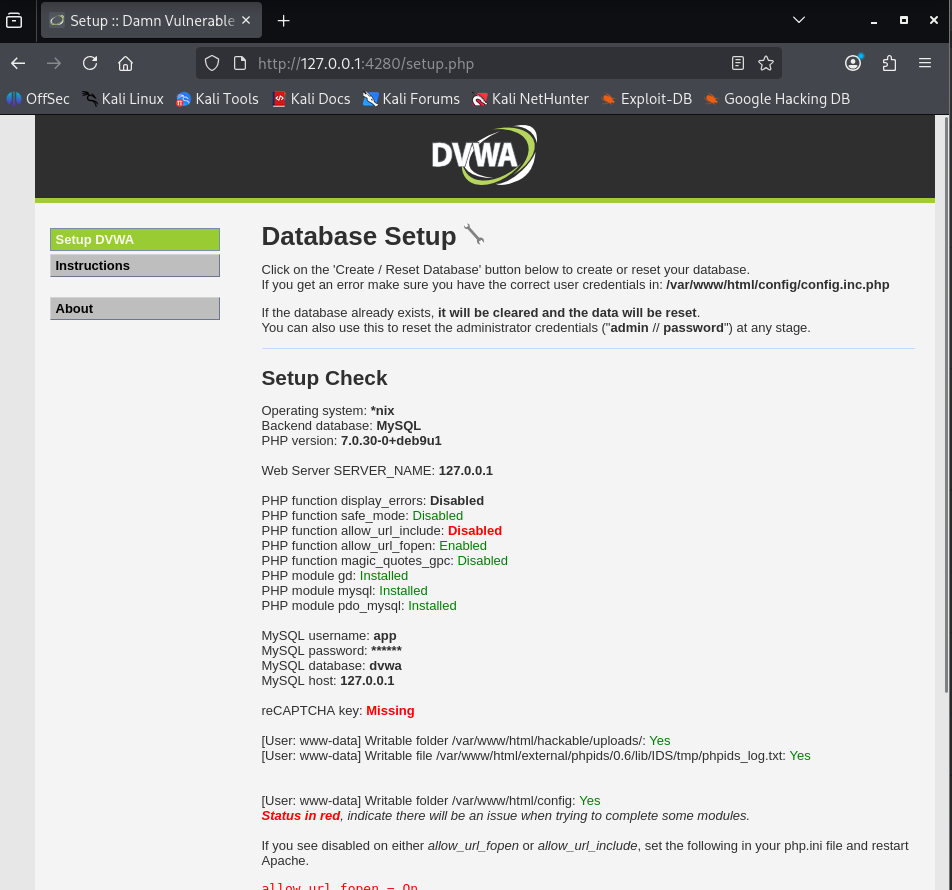
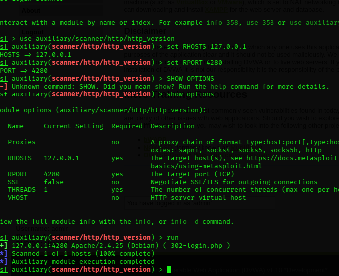
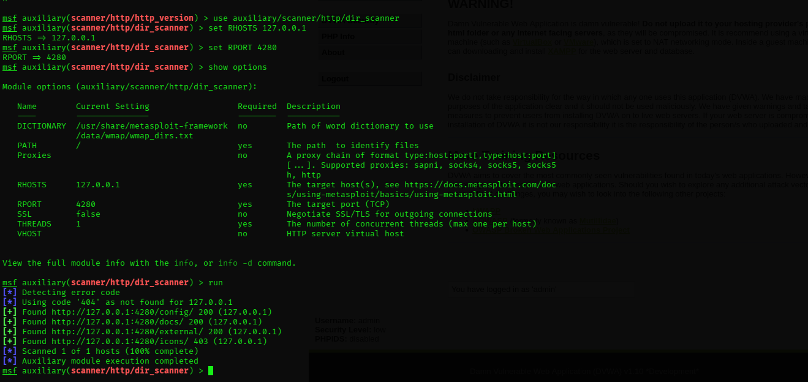
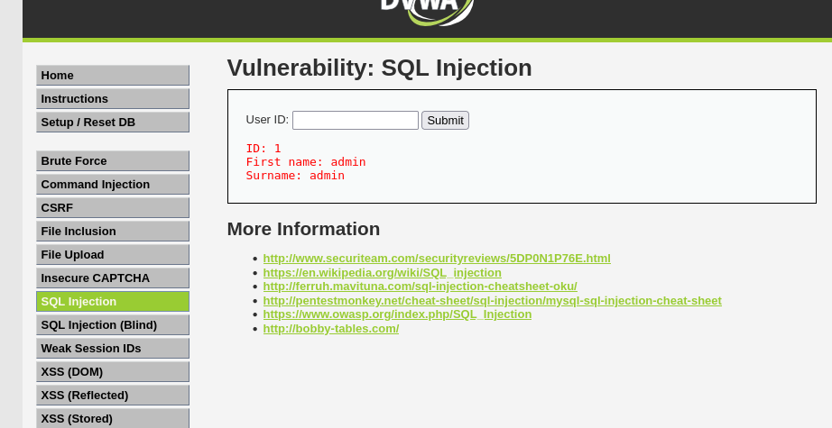
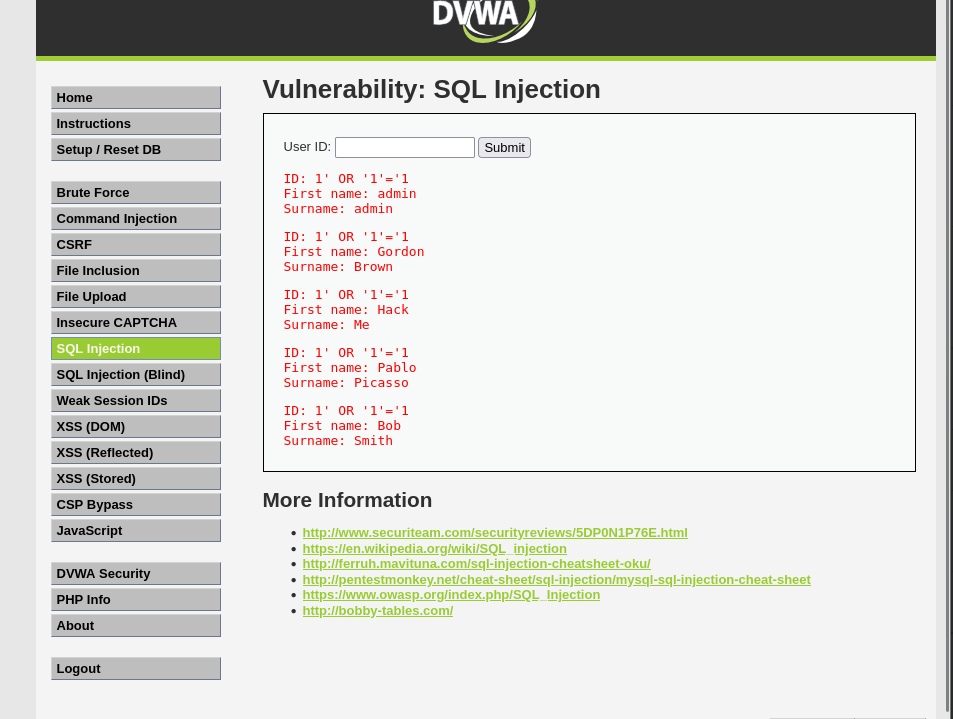

This report documents the vulnerability assessment performed on the Damn Vulnerable Web Application (DVWA) deployed in a controlled local environment. The assessment included application setup, HTTP service scanning, directory enumeration, and SQL Injection vulnerability testing.
| Target Application | Damn Vulnerable Web Application (DVWA) |
|---|---|
| Target Address | http://127.0.0.1:4280 |
| Testing Environment | Kali Linux |
| Deployment Method | Docker Container |
| Tool Used | Metasploit Framework |
| Assessment Type | Web Application Vulnerability Assessment |
The objective of this assessment was to deploy DVWA in a controlled environment and perform web application scanning and vulnerability testing. The assessment focused on identifying the HTTP service, discovering accessible directories, and testing the application for SQL Injection vulnerability.
Damn Vulnerable Web Application (DVWA) was deployed locally using Docker. The application was configured successfully and the database was created and initialized.
After completing the setup process, the DVWA application was accessible through the local browser using the following address:
http://127.0.0.1:4280

Figure 1: Successful DVWA Setup and Database Configuration
Metasploit Framework was used to perform HTTP service scanning against the locally hosted DVWA application.
The following Metasploit module was used:
auxiliary/scanner/http/http_version
| Parameter | Value |
|---|---|
| RHOSTS | 127.0.0.1 |
| RPORT | 4280 |

Figure 2: HTTP Service Scanning Using Metasploit
Directory enumeration was performed using the Metasploit module:
auxiliary/scanner/http/dir_scanner
The target application was scanned using the following configuration:
| Parameter | Value |
|---|---|
| RHOSTS | 127.0.0.1 |
| RPORT | 4280 |
The directories /config/, /docs/, and /external/ were accessible and returned HTTP status code 200.
The /icons/ directory returned HTTP status code 403, indicating that access was restricted.

Figure 3: Directory Enumeration Results
After completing the scanning and directory enumeration process, the SQL Injection vulnerability module available in DVWA was selected for testing.
The purpose of the test was to determine whether the application properly handled user input before using it in database queries.
A normal User ID value was entered into the application. The application returned information associated with the requested user.

Figure 4: Normal User ID Input
A SQL Injection test payload was entered into the User ID field of the intentionally vulnerable DVWA application.
Test Payload:
' OR '1'='1
Instead of returning information for a single user, the application returned multiple user records.
The application accepted the injected input and returned multiple records. This demonstrates that the application was vulnerable to SQL Injection in the tested DVWA environment.

Figure 5: SQL Injection Vulnerability Result
| Finding | Description | Severity |
|---|---|---|
| Accessible Directories | Directory enumeration revealed multiple accessible directories including config, docs, and external. | Low |
| SQL Injection | The application accepted malicious SQL input and returned multiple database records. | High |
The identified SQL Injection vulnerability was assigned a CVSS score based on its potential impact on confidentiality, integrity, and availability.
| Vulnerability Name | SQL Injection |
|---|---|
| Severity | High |
| CVSS Version | CVSS v3.1 |
| CVSS Score | 8.8 (High) |
| CVSS Vector | CVSS:3.1/AV:N/AC:L/PR:L/UI:N/S:U/C:H/I:H/A:H |
SQL Injection vulnerabilities can allow an attacker to manipulate database queries by supplying specially crafted input.
Depending on the application and database permissions, successful SQL Injection may result in:
The web application vulnerability assessment was successfully completed in a controlled local environment using Kali Linux, Docker, DVWA, and the Metasploit Framework.
The assessment included successful deployment and configuration of DVWA, HTTP service scanning, and directory enumeration. The scanning process identified several accessible directories within the target application.
SQL Injection testing demonstrated that the intentionally vulnerable DVWA application accepted malicious SQL input. Normal input returned a single record, whereas the SQL Injection test returned multiple database records.
Based on the assessment, SQL Injection was identified as the major vulnerability, with a CVSS v3.1 score of 8.8 (High). Proper input validation, parameterized queries, and secure coding practices are recommended to prevent similar vulnerabilities.